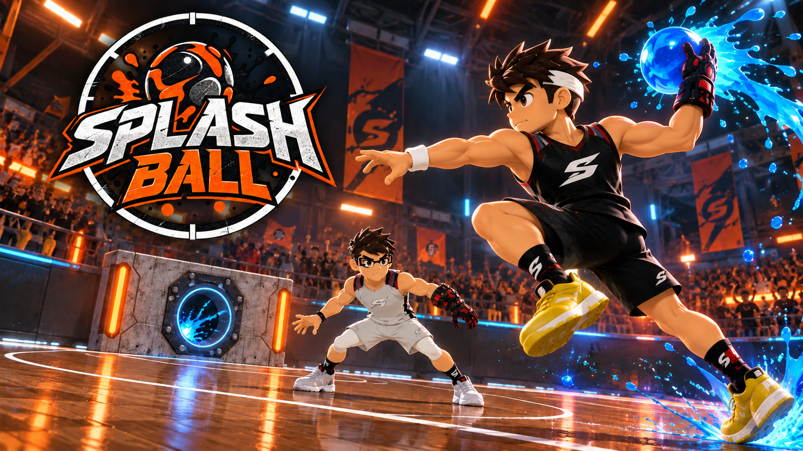

Entre na arena do Splash Ball
Escolha seu clube e dispute partidas na arena. Passe, proteja a bola e acerte o coletor!
Teclado ou controle. Não precisa instalar o Godot.
Controles e dicas para começar
PC: WASD move; Shift corre; J passa; segure e solte K para arremessar; H lança ou dá o bote; E dá enfiada; Q protege ou troca defensor; Tab troca jogador; Espaço pula; P pausa.
Controle: analógico move, RB corre, A passe, X arremesso, B bote, Y enfiada, LB proteção/troca, Start pausa. Os comandos podem ser remapeados nas opções.
Escolha PARTIDA no menu, confirme os dois clubes e inicie o jogo. Esta versão usa teclado ou controle; comandos de toque serão uma etapa posterior.